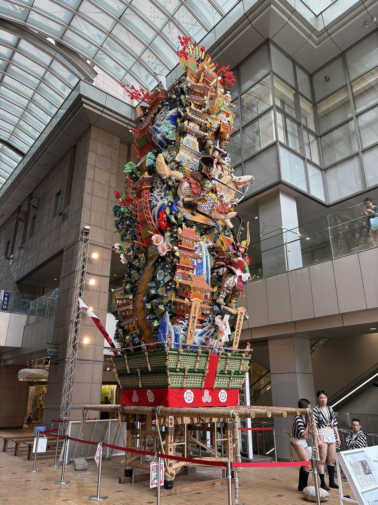

きょうの社会
学習問題をつくろう
みんなの「気になる」から
みんなで調べる問いを決める
前の時間に みんなが見つけたもの 11こ
祭り・行事博多どんたく博多祇園山笠飯塚山笠川渡り神幸祭玉せせり節分祭あしや花火大会
ものづくり博多人形
建物・場所旧伊藤伝右衛門邸英彦山神宮福岡銀行 飯塚本町支店



「受けつがれてきた」って どういうこと？
昔の人
→わたす
今の人
→わたす
これからの人
バトンのように 人から人へ わたされてきたもの
とちゅうで だれもいなくなると 消えてしまう
たとえば 飯塚山笠
1732年はじまり
1963年とだえた
1971年また始めた人がいた
いま続いている
一度とだえても また始めた人がいたから 今がある
0411こは 3つのなかまに分けられる
祭り・行事
7こ毎年 人が集まって行う
やる人がいないと 続かない
ものづくり
1こ人の手で作りつづける
作る人がいないと 続かない
建物・場所
3こ形が残る
守る人がいないと こわれる
学習問題って なに？
みんなで 何時間もかけて 調べていく 大きな問い
×すぐ答えが出る問い
博多どんたくは 何月？
→ 5月 調べたら すぐ終わる
○調べたくなる問い
博多どんたくは だれが どのようにして 続けてきたのだろう
→ 何時間も 調べられる
「だれが」「どのように」「なぜ」が入ると 学習問題になりやすい
06きょうのすすめ方
1みる5分
気になるものに しるしをつける
2しらべる15分
2つか3つを リンクで調べる
3くらべる10分
ものさしで くらべる
4きめる10分
学習問題のたねを 書く
しらべるときの 3つのめがね
いつから続いている？
だれが続けている？ 守っている？
とだえそうに なったことは？
しらべカードに この3つを書く
08付箋の使い方
先に
→リンクを開いて 自分で調べる
あとで
付箋をはがして 確かめる
先に はがさない
09受けつがれてきたもの？ ものさしで見よう
- 長く続いている
- 地域の人が 大切にしている
- 守ったり 続けたりしている人がいる
福岡銀行の支店は どうかな
10学習問題のたねの 形
- 〇〇は だれが どのようにして 受けついできたのだろう
- 〇〇は なぜ 何百年も 続いてきたのだろう
- 〇〇は 一度とだえたのに なぜ また始まったのだろう
〇〇に 自分がいちばん調べたいものを入れる
11